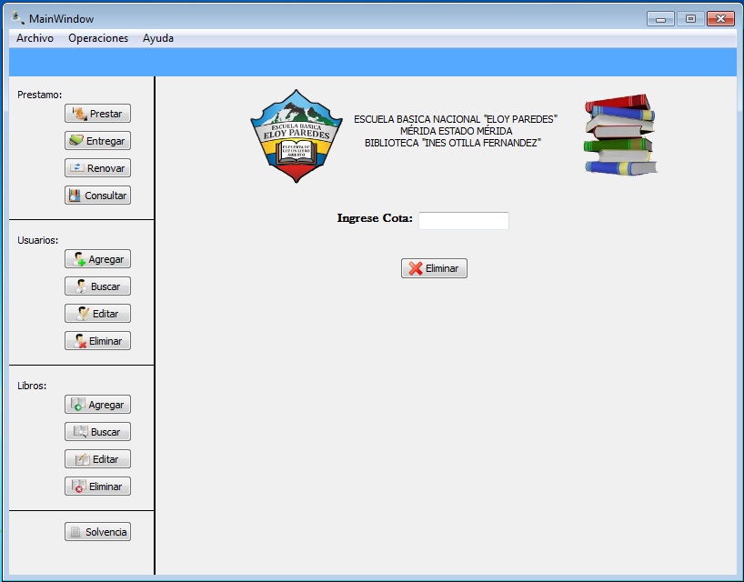

Para realizar la operación de eliminar un libro existen dos forma de realizar dicha operación:
Figura: Menu Operaciones -> Libro
Una vez seleccionada la opción de eliminar, debe llenar el formulario que se le muestra en la siguiente figura. El campo que debe de llenar es la cota del libro, si el libro no se encuentra registrado mostrara un error, en caso contrario el libro será eliminado satifactoriamente.
